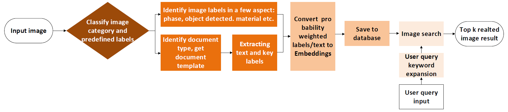
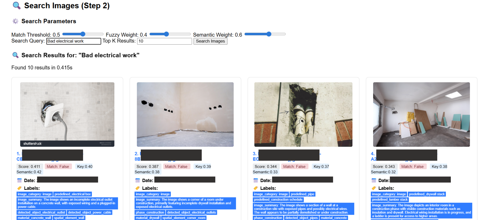
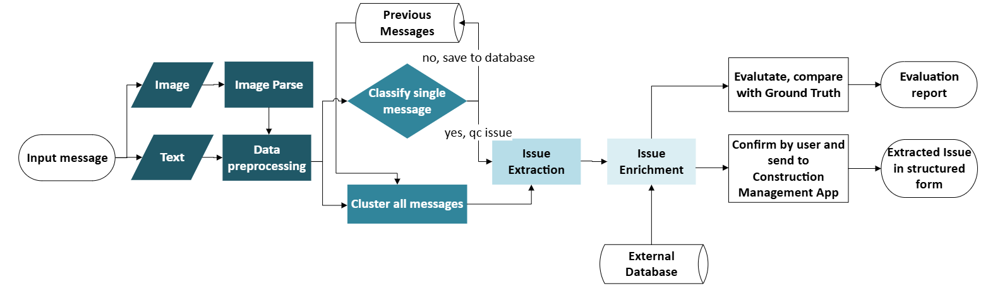
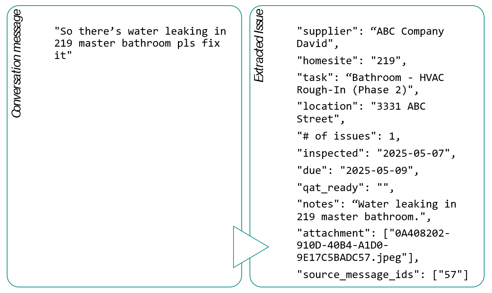

Internship work at Lennar
This is the documentation of my work at Lennar Corporation. Leveraging LLM to interpret data to manage construction process.
- Technology Stack: Python, FastAPI, OpenAI APIs, FAISS, LangChain
- Timeline: June 2025 - August 2025
- Role: Applied AI Engineer Intern
-
Job description:
- Architected scalable FastAPI microservices with object-oriented design supporting multimodal AI workflows, processing 1000+ images with hybrid search (semantic + keyword + reranking) in 240 seconds through async batch processing and efficient API orchestration.
- Built high-performance vector database infrastructure using FAISS with O(1) metadata lookup and hybrid retrieval strategies, enabling real-time semantic search across construction domain knowledge with sub-second query response times.
- Engineered end-to-end NLP pipeline processing construction conversations into structured data reports using few-shots classification, K-means/HDBSCAN clustering, and RAG framework with LangChain integration, achieving 20k+ text embeddings in under 300 seconds.
- Optimized ML system performance through asyncio implementation and concurrent OpenAI's API calls, delivering measurable precision/recall improvements on production-scale noisy text data while maintaining system reliability.
-
Project problem statement:
- Automated quality control extraction from construction communications: Identify QC issue, extract issue, enrich with details, output BuildPro issue
- Image parse: keywords labeling for each site image
- Document Image Parse: Extract structured data for each document image
- ImageSearch that can be searched by Natural Language
Project 1: Image search
-
Overview & Data flow:
- Input: Image parse & User query Input
- Output: Top k related image
-
Key features:
- Image Parser: Extracts visual features and metadata from images
- Document Image Parser: Analyzes construction documents, QC reports, and forms
- Image Search Engine: Enables natural language queries to find relevant images
-
Architecture:

-
Demo with synthetic data:

Project 2: Issue detect and extract
-
System Architecture:
- Input: Single target message, supported by previous messages & external data from BuiltPro
- Output: Issue extracted & Evaluation report
- Key Features: Data preprocessing, Classification & Clustering, Extraction, Enrichment

-
Sample output with synthetic data:
